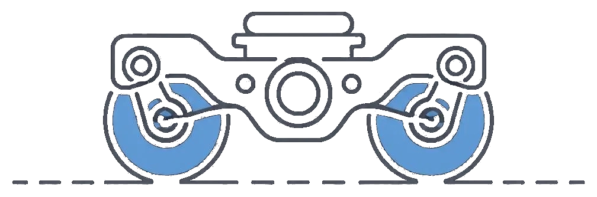

Business Impact Calculator
If it fails in service
$
h
$
If we catch it first
$
h
$
Fleet & rates
×
%
$
–
Saved per fault caught early
–
Net per year, – units
–
Net per unit per year
–
To cover the running cost
Per fault caught before it reached service
Annual, at the scaled fleet
Defaults are illustrative rail-industry figures — replace them with real LTA/SMRT numbers.
The per-fault saving and lead time come from this pipeline's validation results
(
validation_outputs/lead_time_summary.csv); the failure rate is yours to supply, for the reason given above.
Rolling Stock Digital Twin
Unit risk
Normal
Caution
Warning
Critical
System deviation
<1σ
1–2σ
2–3.5σ
>3.5σ
Loading fleet layout…
Schematic side view, not to scale. The silhouette is for orientation; the chip grid under each car is the readout.
Unit chips (Door, Bogie) are coloured by that unit's fused risk level. System chips (A/C, Light, Batt, Radio,
Traction, Brake) are coloured by how far that individual sensor channel sits from the healthy fleet mean, signed so that
a brake capacity 4σ below healthy and a bearing temperature 4σ above it both read as severe.
Hover any chip for its reading; click to open that unit's decision trace.
Unit Detail

No unit selected
Select any red or orange unit above to see why it's flagged
Click a row in the fleet table, or a door/bogie shape in the digital twin.
Score Your Own Data
Drop a telemetry file here
or click to browse — every unit in it is scored by the models already trained on this fleet
.csv .parquet · needs a unit id, a timestamp, and the signal columns for one subsystem
Loading expected columns…
External Services
None of these produce a risk level, and none of them can change one. Every score, threshold and decision trace on this page is
computed locally by
pipeline/ and stands on its own if every one of them is switched off. API keys are read server-side
from the API process's environment — the browser never holds a key and never calls these providers directly.
Model Validation
| Approach | Genuine Early Detections | Avg Lead Time |
|---|---|---|
| Loading validation results… | ||
Selected Approach: Autoencoder-Driven Anomaly Detection
Reason: The baseline threshold fires primarily on noise, verified via sustain-fraction analysis (the alert rarely holds through to the actual fault). The autoencoder achieves genuine sustained detection across all known fault cases with real lead time.
Pulled live from
validation_outputs/ablation_comparison.csv (pipeline/ablation.py) — a detection only counts as "genuine" if the alert stayed sustained through to the fault; an isolated one-off spike is excluded as noise, not real early warning.Detection Sensitivity
◀ Aggressive (90th pct) — fires earlier, more false alarms
Conservative (99.5th pct) — fewer false alarms, may catch later ▶
–
Total Alerts
–
Faults Caught
–
Avg Lead Time
Loading…
Fleet Overview
–
Total Units
–
Normal
–
Caution
–
Warning
–
Critical
Priority Alert — Highest-Risk Units
| Unit | Subsystem | Train | Risk | Health Index | Recon Err | Primary signal |
|---|
Maintenance Actions
| Work Order | Unit | Priority | Description | Created | Status | Actions |
|---|---|---|---|---|---|---|
| No active alerts — work orders appear here automatically when a unit crosses into Warning or Critical. | ||||||
Simulated maintenance workflow — illustrates how alerts would integrate with an existing CMMS (Computerized Maintenance Management System) or work order platform. Generated client-side for this demo session only; "Acknowledge"/"Schedule" just update local state, no real ticketing backend.